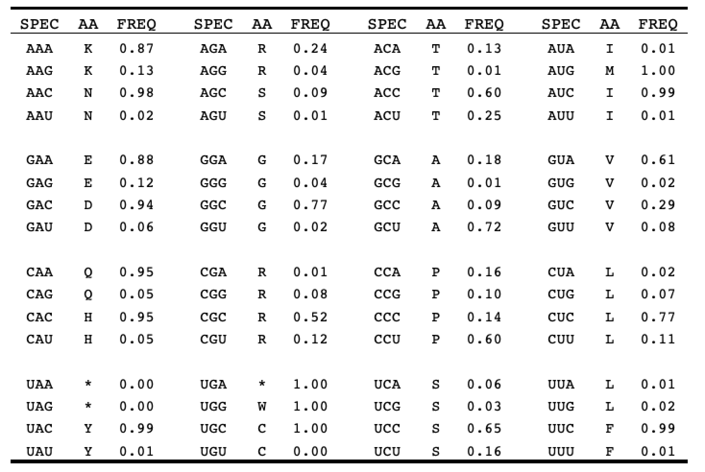

T-box specifier use table
Analogous to codons, T-boxes read the anticodons on tRNA through Watson-Crick base pair interactions. The 'specifier use' table depicts the frequency each specifier is used to decode a given tRNA family.

* The 'SPEC' column displays the given T-box specifier, the 'AA' column shows the corresponding amino acid - tRNA family, while the 'FREQ' column is the frequency observed within the T-box database.
** If you found this table useful, please cite our BioRXiv publication on this work:
Jorge A. Marchand, Merrick D. Pierson Smela, Thomas H. H. Jordan, Kamesh Narasimhan, George M. Church. "TBDB – A database of structurally annotated T-box riboswitch:tRNA pairs". 2020. BioRXIV.